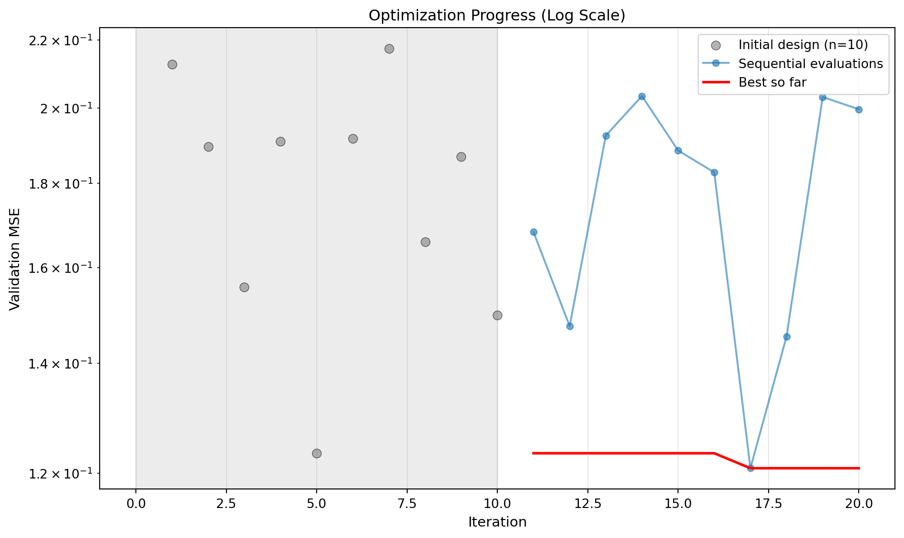
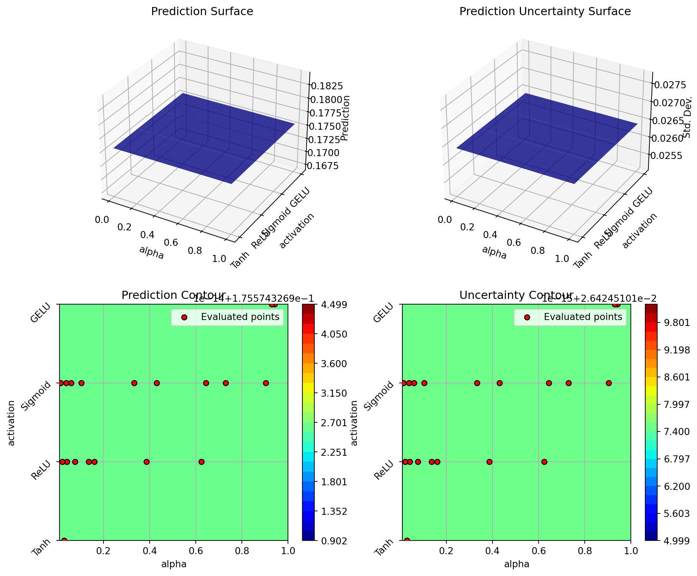
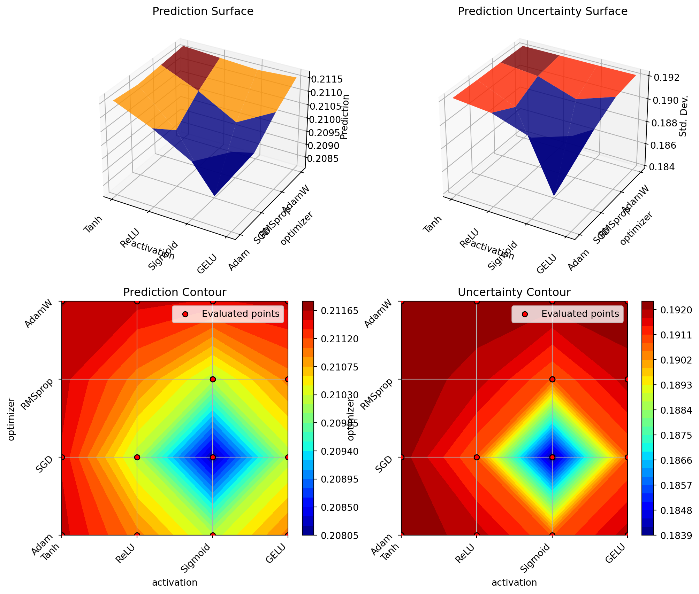
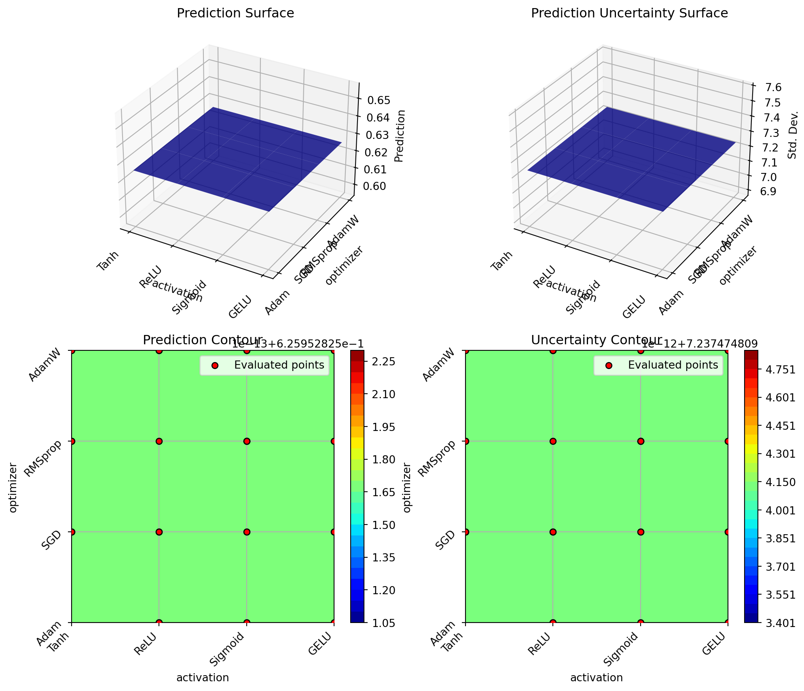
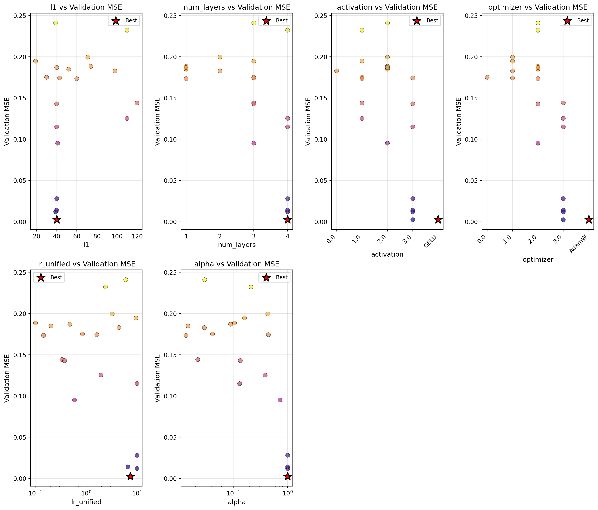
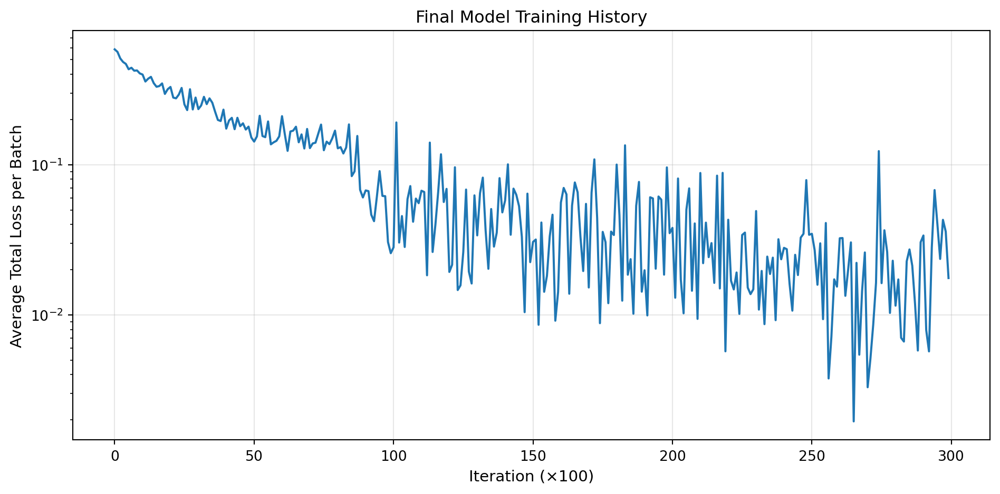
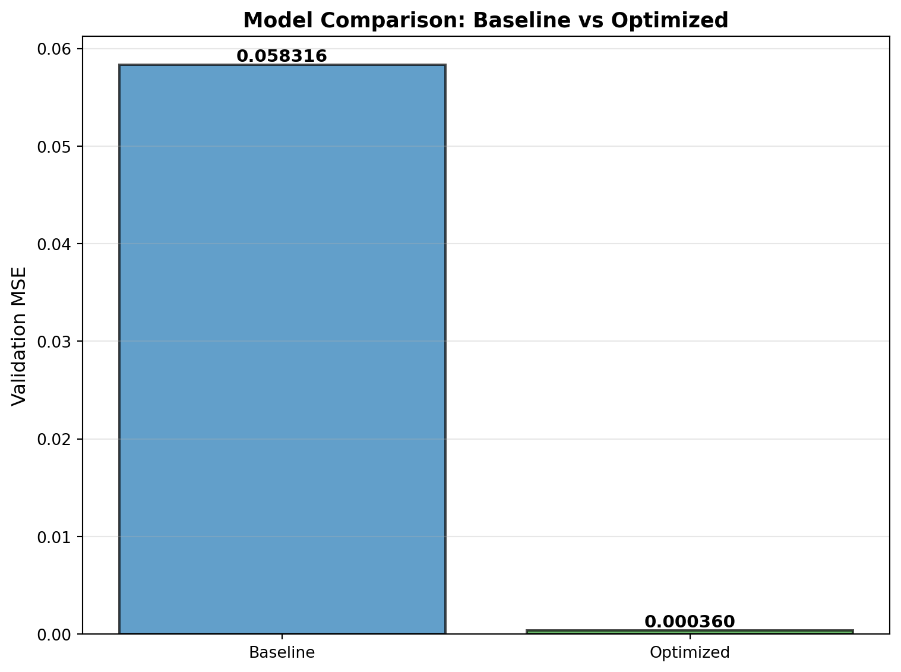
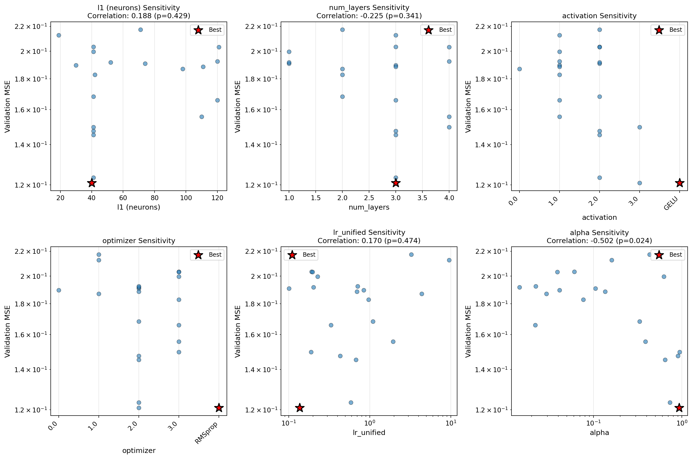

import matplotlib.pyplot as plt
import numpy as np
import torch
import torch.nn as nn
from typing import Tuple
from spotoptim import SpotOptim
from spotoptim.nn.linear_regressor import LinearRegressor
# Set random seed for reproducibility
torch.manual_seed(42)
np.random.seed(42)
# Set number of epochs for training
N_EPOCHS=200013 Hyperparameter Tuning for Physics-Informed Neural Networks
Using SpotOptim to Optimize PINN Architecture and Training
14 Overview
This tutorial demonstrates how to use SpotOptim for hyperparameter optimization of Physics-Informed Neural Networks (PINNs). We’ll optimize the network architecture and training parameters to find the best configuration for solving an ordinary differential equation.
Building on the basic PINN demo, we’ll now systematically search for optimal:
- Number of neurons per hidden layer
- Number of hidden layers
- Activation function (categorical)
- Optimizer algorithm (categorical)
- Learning rate (log-scale)
- Physics loss weight (log-scale)
14.1 Key Features
14.1.1 1. PyTorch Dataset and DataLoader
Following PyTorch best practices from the official tutorial, this tutorial implements:
- Custom Dataset Classes: Separate classes for supervised data (
PINNDataset) and collocation points (CollocationDataset) - DataLoader Integration: Efficient batch processing with configurable batch size, shuffling, and parallel loading
- Proper Data Separation: Clean separation of training, validation, and collocation data
- Gradient Tracking: Automatic gradient handling for collocation points needed in physics loss
Benefits:
- Modularity: Clean separation between data and model code
- Efficiency: Batch processing and optional parallel data loading
- Scalability: Easy to extend to larger datasets
- Best Practices: Follows PyTorch conventions used across the ecosystem
14.1.2 2. Automatic Transformation Handling
This tutorial also showcases SpotOptim’s var_trans feature for automatic variable transformations. Learning rates and regularization parameters are often best explored on a log scale, but manually transforming values is tedious and error-prone. With var_trans, you simply specify:
var_trans = [None, None, "log10", "log10"]SpotOptim then:
- Optimizes internally in log-transformed space (efficient exploration)
- Passes original-scale values to your objective function (no manual conversion needed)
- Displays all results in original scale (easy interpretation)
This eliminates the need for manual 10**x conversions throughout your code!
15 The Problem
We’re solving the same ODE as in the basic PINN demo:
\[ \frac{dy}{dt} + 0.1 y - \sin\left(\frac{\pi t}{2}\right) = 0 \]
with initial condition \(y(0) = 0\).
16 Setup
17 Data Generation
Following PyTorch best practices, we’ll create custom Dataset classes for our PINN data.
17.1 Custom Dataset Classes
We’ll create two dataset types:
PINNDatasetfor supervised data (training and validation)CollocationDatasetfor physics-informed collocation points
from torch.utils.data import Dataset, DataLoader
def oscillator(
n_steps: int = 3000,
t_min: float = 0.0,
t_max: float = 30.0,
y0: float = 0.0,
alpha: float = 0.1,
omega: float = np.pi / 2
) -> Tuple[torch.Tensor, torch.Tensor]:
"""
Solve ODE: dy/dt + alpha*y - sin(omega*t) = 0
using RK2 (midpoint method).
Returns:
t_tensor: Time points, shape (n_steps, 1)
y_tensor: Solution values, shape (n_steps, 1)
"""
t_step = (t_max - t_min) / n_steps
t_points = np.arange(t_min, t_min + n_steps * t_step, t_step)[:n_steps]
y = [y0]
for t_current_step_end in t_points[1:]:
t_midpoint = t_current_step_end - t_step / 2.0
y_prev = y[-1]
slope_at_t_mid = -alpha * y_prev + np.sin(omega * t_midpoint)
y_intermediate = y_prev + (t_step / 2.0) * slope_at_t_mid
slope_at_t_end = -alpha * y_intermediate + np.sin(omega * t_current_step_end)
y_next = y_prev + t_step * slope_at_t_end
y.append(y_next)
t_tensor = torch.tensor(t_points, dtype=torch.float32).view(-1, 1)
y_tensor = torch.tensor(y, dtype=torch.float32).view(-1, 1)
return t_tensor, y_tensor
class PINNDataset(Dataset):
"""PyTorch Dataset for PINN supervised data (training/validation).
This dataset stores time-solution pairs (t, y) for supervised learning.
Args:
t (torch.Tensor): Time points, shape (n_samples, 1)
y (torch.Tensor): Solution values, shape (n_samples, 1)
"""
def __init__(self, t: torch.Tensor, y: torch.Tensor):
self.t = t
self.y = y
def __len__(self) -> int:
return len(self.t)
def __getitem__(self, idx: int) -> Tuple[torch.Tensor, torch.Tensor]:
return self.t[idx], self.y[idx]
class CollocationDataset(Dataset):
"""PyTorch Dataset for PINN collocation points.
This dataset stores time points where physics loss is evaluated.
Gradients are required for computing derivatives in the PDE.
Args:
t (torch.Tensor): Collocation time points, shape (n_points, 1)
"""
def __init__(self, t: torch.Tensor):
# Store collocation points with gradient tracking
self.t = t.requires_grad_(True)
def __len__(self) -> int:
return len(self.t)
def __getitem__(self, idx: int) -> torch.Tensor:
# Return single collocation point (still requires_grad)
return self.t[idx].unsqueeze(0)Generate exact solution using RK2
x_exact, y_exact = oscillator()
# Create training data (sparse sampling)
t_train = x_exact[0:3000:119]
y_train = y_exact[0:3000:119]
# Create validation data (different sampling for unbiased evaluation)
t_val = x_exact[50:3000:120]
y_val = y_exact[50:3000:120]
# Create collocation points for physics loss
t_physics = torch.linspace(0, 30, 50).view(-1, 1)
# Create Dataset objects
train_dataset = PINNDataset(t_train, y_train)
val_dataset = PINNDataset(t_val, y_val)
collocation_dataset = CollocationDataset(t_physics)
print(f"Training dataset size: {len(train_dataset)}")
print(f"Validation dataset size: {len(val_dataset)}")
print(f"Collocation dataset size: {len(collocation_dataset)}")
print(f"\nSample from training dataset:")
t_sample, y_sample = train_dataset[0]
print(f" t: {t_sample.item():.4f}, y: {y_sample.item():.4f}")Training dataset size: 26
Validation dataset size: 25
Collocation dataset size: 50
Sample from training dataset:
t: 0.0000, y: 0.000018 Define the PINN Training Function
This function creates DataLoaders and trains a PINN with given hyperparameters. Following PyTorch best practices, we use DataLoader for efficient batch processing.
def train_pinn(
l1: int,
num_layers: int,
activation: str,
optimizer_name: str,
lr_unified: float,
alpha: float,
n_epochs: int = N_EPOCHS,
batch_size: int = 16,
verbose: bool = False
) -> float:
"""
Train a PINN with specified hyperparameters using DataLoaders.
Args:
l1: Number of neurons per hidden layer
num_layers: Number of hidden layers
activation: Activation function ("Tanh", "ReLU", "Sigmoid", "GELU")
optimizer_name: Optimizer algorithm ("Adam", "SGD", "RMSprop", "AdamW")
lr_unified: Unified learning rate multiplier
alpha: Weight for physics loss
n_epochs: Number of training epochs
batch_size: Batch size for DataLoader
verbose: Whether to print progress
Returns:
Validation mean squared error
"""
# Set seed for reproducibility
torch.manual_seed(42)
# Create DataLoaders
train_loader = DataLoader(
train_dataset,
batch_size=batch_size,
shuffle=True,
num_workers=0,
pin_memory=False
)
val_loader = DataLoader(
val_dataset,
batch_size=batch_size,
shuffle=False,
num_workers=0,
pin_memory=False
)
# For collocation points, we can use full batch since it's small
collocation_loader = DataLoader(
collocation_dataset,
batch_size=len(collocation_dataset),
shuffle=False,
num_workers=0
)
# Create model
model = LinearRegressor(
input_dim=1,
output_dim=1,
l1=l1,
num_hidden_layers=num_layers,
activation=activation,
lr=lr_unified
)
# Get optimizer
optimizer = model.get_optimizer(optimizer_name)
# Training loop
for epoch in range(n_epochs):
model.train()
epoch_loss = 0.0
# Get collocation points (full batch)
t_physics_batch = next(iter(collocation_loader))
# Ensure gradients are enabled
t_physics_batch = t_physics_batch.requires_grad_(True)
# Iterate over training batches
for batch_t, batch_y in train_loader:
optimizer.zero_grad()
# Data Loss
y_pred = model(batch_t)
loss_data = torch.mean((y_pred - batch_y)**2)
# Physics Loss (computed on full collocation set)
y_physics = model(t_physics_batch)
dy_dt = torch.autograd.grad(
y_physics,
t_physics_batch,
torch.ones_like(y_physics),
create_graph=True,
retain_graph=True
)[0]
# PDE residual: dy/dt + 0.1*y - sin(pi*t/2) = 0
physics_residual = dy_dt + 0.1 * y_physics - torch.sin(np.pi * t_physics_batch / 2)
loss_physics = torch.mean(physics_residual**2)
# Total Loss
loss = loss_data + alpha * loss_physics
loss.backward()
optimizer.step()
epoch_loss += loss.item()
if verbose and (epoch + 1) % 2000 == 0:
avg_loss = epoch_loss / len(train_loader)
print(f" Epoch {epoch+1}/{n_epochs}: Avg Loss = {avg_loss:.6f}")
# Evaluate on validation set
model.eval()
val_mse = 0.0
with torch.no_grad():
for batch_t, batch_y in val_loader:
y_pred = model(batch_t)
val_mse += torch.mean((batch_y - y_pred)**2).item()
val_mse /= len(val_loader)
return val_mse
# Test the function with default parameters
print("Testing PINN training function with DataLoaders...")
test_error = train_pinn(
l1=32,
num_layers=2,
activation="Tanh",
optimizer_name="Adam",
lr_unified=3.0,
alpha=0.06,
batch_size=16,
n_epochs=N_EPOCHS,
verbose=True
)
print(f"\nTest validation MSE: {test_error:.6f}")Testing PINN training function with DataLoaders...
Epoch 2000/2000: Avg Loss = 0.185009
Test validation MSE: 0.16962219 Hyperparameter Optimization with SpotOptim
Now we’ll use SpotOptim to find the best hyperparameters:
19.1 Define the Objective Function
def objective_pinn(X):
"""
Objective function for SpotOptim.
Args:
X: Array of hyperparameter configurations, shape (n_configs, 6)
Each row: [l1, num_layers, activation, optimizer, lr_unified, alpha]
Note: SpotOptim handles log transformations and factor mapping automatically
Returns:
Array of validation errors
"""
results = []
for i, params in enumerate(X):
# Extract parameters (already in original scale thanks to var_trans)
# Factor variables (activation, optimizer) are returned as strings
l1 = int(params[0]) # Number of neurons
num_layers = int(params[1]) # Number of hidden layers
activation = params[2] # Activation function
optimizer_name = params[3] # Optimizer algorithm
lr_unified = params[4] # Learning rate
alpha = params[5] # Physics weight
print(f"\nConfiguration {i+1}/{len(X)}:")
print(f" l1={l1}, num_layers={num_layers}, activation={activation}, ")
print(f" optimizer={optimizer_name}, lr_unified={lr_unified:.4f}, alpha={alpha:.4f}")
# Train PINN with these hyperparameters
val_error = train_pinn(
l1=l1,
num_layers=num_layers,
activation=activation,
optimizer_name=optimizer_name,
lr_unified=lr_unified,
alpha=alpha,
n_epochs=N_EPOCHS,
verbose=False
)
print(f" Validation MSE: {val_error:.6f}")
results.append(val_error)
return np.array(results)
# Test the objective function
print("Testing objective function with 2 configurations...")
X_test = np.array([
[32, 2, "Tanh", "Adam", 3.0, 0.06], # Baseline config
[64, 3, "ReLU", "AdamW", 2.0, 0.04] # Alternative config
], dtype=object)
test_results = objective_pinn(X_test)
print(f"\nTest results: {test_results}")Testing objective function with 2 configurations...
Configuration 1/2:
l1=32, num_layers=2, activation=Tanh,
optimizer=Adam, lr_unified=3.0000, alpha=0.0600
Validation MSE: 0.169622
Configuration 2/2:
l1=64, num_layers=3, activation=ReLU,
optimizer=AdamW, lr_unified=2.0000, alpha=0.0400
Validation MSE: 0.147564
Test results: [0.16962173 0.1475635 ]19.2 Run the Optimization
# Define search space with var_trans for automatic log-scale handling
bounds = [
(16, 128), # l1: neurons per layer (16 to 128)
(1, 4), # num_layers: 1 to 4 hidden layers
("Tanh", "ReLU", "Sigmoid", "GELU"), # activation: activation function
("Adam", "SGD", "RMSprop", "AdamW"), # optimizer: optimizer algorithm
(0.1, 10.0), # lr_unified: learning rate (0.1 to 10)
(0.01, 1.0) # alpha: physics weight (0.01 to 1.0)
]
var_type = ["int", "int", "factor", "factor", "num", "num"]
var_name = ["l1", "num_layers", "activation", "optimizer", "lr_unified", "alpha"]
# Use var_trans to handle log-scale transformations automatically
# Factor variables don't need transformations (None)
var_trans = [None, None, None, None, "log10", "log10"]
# Create optimizer
optimizer = SpotOptim(
fun=objective_pinn,
bounds=bounds,
var_type=var_type,
var_name=var_name,
var_trans=var_trans, # Automatic log-scale handling!
max_iter=20,
n_initial=10,
seed=42,
verbose=True
)Factor variable at dimension 2:
Levels: ['Tanh', 'ReLU', 'Sigmoid', 'GELU']
Mapped to integers: 0 to 3
Factor variable at dimension 3:
Levels: ['Adam', 'SGD', 'RMSprop', 'AdamW']
Mapped to integers: 0 to 3
TensorBoard logging disabledDisplay search space configuration. The transcolumn shows applied transformations. lr_unified and alpha use log10 transformation internally. This enables efficient exploration of log-scale parameters. All values shown are in original scale (not transformed).
# Display search space configuration
design_table = optimizer.print_design_table(tablefmt="github")
print(design_table)| name | type | lower | upper | default | trans |
|------------|--------|---------|---------|-----------|---------|
| l1 | int | 16.0 | 128.0 | 72 | - |
| num_layers | int | 1.0 | 4.0 | 2 | - |
| activation | factor | Tanh | GELU | Sigmoid | - |
| optimizer | factor | Adam | AdamW | RMSprop | - |
| lr_unified | num | 0.1 | 10.0 | 5.05 | log10 |
| alpha | num | 0.01 | 1.0 | 0.505 | log10 |Run optimization
result = optimizer.optimize()
Configuration 1/10:
l1=19, num_layers=3, activation=ReLU,
optimizer=SGD, lr_unified=9.5756, alpha=0.1603
Validation MSE: 0.212684
Configuration 2/10:
l1=30, num_layers=3, activation=ReLU,
optimizer=Adam, lr_unified=0.8430, alpha=0.0412
Validation MSE: 0.189506
Configuration 3/10:
l1=110, num_layers=4, activation=ReLU,
optimizer=AdamW, lr_unified=1.9457, alpha=0.3866
Validation MSE: 0.155698
Configuration 4/10:
l1=74, num_layers=1, activation=Sigmoid,
optimizer=RMSprop, lr_unified=0.1014, alpha=0.1050
Validation MSE: 0.190902
Configuration 5/10:
l1=41, num_layers=3, activation=Sigmoid,
optimizer=RMSprop, lr_unified=0.5877, alpha=0.7301
Validation MSE: 0.123401
Configuration 6/10:
l1=52, num_layers=1, activation=Sigmoid,
optimizer=RMSprop, lr_unified=0.2023, alpha=0.0145
Validation MSE: 0.191662
Configuration 7/10:
l1=71, num_layers=2, activation=Sigmoid,
optimizer=SGD, lr_unified=3.2551, alpha=0.4300
Validation MSE: 0.217354
Configuration 8/10:
l1=120, num_layers=3, activation=ReLU,
optimizer=AdamW, lr_unified=0.3330, alpha=0.0220
Validation MSE: 0.165832
Configuration 9/10:
l1=98, num_layers=2, activation=Tanh,
optimizer=SGD, lr_unified=4.3915, alpha=0.0293
Validation MSE: 0.186928
Configuration 10/10:
l1=87, num_layers=2, activation=GELU,
optimizer=SGD, lr_unified=1.4861, alpha=0.0949
Validation MSE: nan
Warning: Found 1 NaN/inf value(s), replacing with inf + noise
Warning: Removed 1 sample(s) with NaN/inf values
Initial best: f(x) = 0.123401
Configuration 1/1:
l1=41, num_layers=4, activation=GELU,
optimizer=AdamW, lr_unified=0.1893, alpha=0.9411
Validation MSE: 0.149702
Iteration 1: f(x) = 0.149702
Configuration 1/1:
l1=41, num_layers=2, activation=Sigmoid,
optimizer=RMSprop, lr_unified=1.0971, alpha=0.3324
Validation MSE: 0.168198
Iteration 2: f(x) = 0.168198
Configuration 1/1:
l1=41, num_layers=3, activation=Sigmoid,
optimizer=RMSprop, lr_unified=0.4315, alpha=0.9034
Validation MSE: 0.147431
Iteration 3: f(x) = 0.147431
Configuration 1/1:
l1=120, num_layers=4, activation=ReLU,
optimizer=RMSprop, lr_unified=0.7084, alpha=0.0223
Validation MSE: 0.192493
Iteration 4: f(x) = 0.192493
Configuration 1/1:
l1=41, num_layers=3, activation=Sigmoid,
optimizer=AdamW, lr_unified=0.1922, alpha=0.0607
Validation MSE: 0.203450
Iteration 5: f(x) = 0.203450
Configuration 1/1:
l1=111, num_layers=3, activation=ReLU,
optimizer=RMSprop, lr_unified=0.6980, alpha=0.1358
Validation MSE: 0.188511
Iteration 6: f(x) = 0.188511
Configuration 1/1:
l1=42, num_layers=2, activation=ReLU,
optimizer=AdamW, lr_unified=0.9678, alpha=0.0769
Validation MSE: 0.182839
Iteration 7: f(x) = 0.182839
Configuration 1/1:
l1=40, num_layers=3, activation=GELU,
optimizer=RMSprop, lr_unified=0.1368, alpha=0.9287
Validation MSE: 0.120842
Iteration 8: New best f(x) = 0.120842
Configuration 1/1:
l1=41, num_layers=3, activation=Sigmoid,
optimizer=RMSprop, lr_unified=0.6786, alpha=0.6441
Validation MSE: 0.145306
Iteration 9: f(x) = 0.145306
Configuration 1/1:
l1=121, num_layers=4, activation=Sigmoid,
optimizer=AdamW, lr_unified=0.1978, alpha=0.0391
Validation MSE: 0.203172
Iteration 10: f(x) = 0.203172
Configuration 1/1:
l1=41, num_layers=1, activation=ReLU,
optimizer=AdamW, lr_unified=0.2271, alpha=0.6241
Validation MSE: 0.199705
Iteration 11: f(x) = 0.19970520 Results Analysis
20.1 Best Configuration
Display best hyperparameters using print_best() method. With var_trans, results are already in original scale!
optimizer.print_best(result)
Best Solution Found:
--------------------------------------------------
l1: 40
num_layers: 3
activation: GELU
optimizer: RMSprop
lr_unified: 0.1368
alpha: 0.9287
Objective Value: 0.1208
Total Evaluations: 20Store values for later use in visualizations. Values are already in original scale thanks to var_trans. Factor variables are returned as strings.
best_l1 = int(result.x[0])
best_num_layers = int(result.x[1])
best_activation = result.x[2]
best_optimizer = result.x[3]
best_lr_unified = result.x[4]
best_alpha = result.x[5]
best_val_error = result.fun
print(f"Best activation: {best_activation}")
print(f"Best optimizer: {best_optimizer}")Best activation: GELU
Best optimizer: RMSprop20.1.1 Results Table with Importance Scores
Display comprehensive results table with importance scores
table = optimizer.print_results_table(show_importance=True, tablefmt="github")
print(table)| name | type | lower | upper | tuned | trans | importance | stars |
|------------|--------|---------|---------|---------------------|---------|--------------|---------|
| l1 | int | 16.0 | 128.0 | 40 | - | 8.30 | * |
| num_layers | int | 1.0 | 4.0 | 3 | - | 13.75 | * |
| activation | factor | Tanh | GELU | GELU | - | 19.91 | * |
| optimizer | factor | Adam | AdamW | RMSprop | - | 8.90 | * |
| lr_unified | num | 0.1 | 10.0 | 0.13678714783116164 | log10 | 16.93 | * |
| alpha | num | 0.01 | 1.0 | 0.9287492634451227 | log10 | 32.21 | * |
Interpretation: ***: >95%, **: >50%, *: >1%, .: >0.1%20.2 Optimization History
optimizer.plot_progress(log_y=True, ylabel="Validation MSE")
20.3 Surrogate Visualization
Visualize the surrogate model’s learned response surface for the most important hyperparameter combinations:
# Plot top 3 most important hyperparameter combinations
optimizer.plot_important_hyperparameter_contour(max_imp=3)Plotting surrogate contours for top 3 most important parameters:
alpha: importance = 32.21% (type: num)
activation: importance = 19.91% (type: factor)
lr_unified: importance = 16.93% (type: num)
Generating 3 surrogate plots...
Plotting alpha vs activation
Plotting alpha vs lr_unified
Plotting activation vs lr_unified
20.4 Parameter Distribution Analysis
optimizer.plot_parameter_scatter(
result,
ylabel="Validation MSE",
cmap="plasma",
figsize=(14, 12)
)
21 Train Final Model with Best Hyperparameters
Now let’s train a final model with the optimized hyperparameters using DataLoaders:
print("Training final model with best hyperparameters using DataLoaders...")
print(f"Training for 30,000 epochs...")
# Set seed for reproducibility
torch.manual_seed(42)
# Create DataLoaders for final training
final_batch_size = 16
train_loader_final = DataLoader(
train_dataset,
batch_size=final_batch_size,
shuffle=True,
num_workers=0
)
collocation_loader_final = DataLoader(
collocation_dataset,
batch_size=len(collocation_dataset),
shuffle=False,
num_workers=0
)
# Create model with best hyperparameters
final_model = LinearRegressor(
input_dim=1,
output_dim=1,
l1=best_l1,
num_hidden_layers=best_num_layers,
activation=best_activation,
lr=best_lr_unified
)
optimizer_final = final_model.get_optimizer(best_optimizer)
# Training with history tracking
loss_history = []
n_epochs_final = 30000
for epoch in range(n_epochs_final):
final_model.train()
epoch_loss = 0.0
# Get collocation points
t_physics_batch = next(iter(collocation_loader_final))
t_physics_batch = t_physics_batch.requires_grad_(True)
# Iterate over training batches
for batch_t, batch_y in train_loader_final:
optimizer_final.zero_grad()
# Data Loss
y_pred = final_model(batch_t)
loss_data = torch.mean((y_pred - batch_y)**2)
# Physics Loss
y_physics = final_model(t_physics_batch)
dy_dt = torch.autograd.grad(
y_physics,
t_physics_batch,
torch.ones_like(y_physics),
create_graph=True,
retain_graph=True
)[0]
physics_residual = dy_dt + 0.1 * y_physics - torch.sin(np.pi * t_physics_batch / 2)
loss_physics = torch.mean(physics_residual**2)
# Total Loss
loss = loss_data + best_alpha * loss_physics
loss.backward()
optimizer_final.step()
epoch_loss += loss.item()
# Record average loss every 100 epochs
if (epoch + 1) % 100 == 0:
avg_loss = epoch_loss / len(train_loader_final)
loss_history.append(avg_loss)
if (epoch + 1) % 5000 == 0:
avg_loss = epoch_loss / len(train_loader_final)
print(f" Epoch {epoch+1}/{n_epochs_final}: Avg Loss = {avg_loss:.6f}")
print("Training completed!")
# Plot training history
plt.figure(figsize=(10, 5))
plt.plot(loss_history, linewidth=1.5)
plt.xlabel('Iteration (×100)', fontsize=11)
plt.ylabel('Average Total Loss per Batch', fontsize=11)
plt.title('Final Model Training History', fontsize=12)
plt.grid(True, alpha=0.3)
plt.yscale('log')
plt.tight_layout()
plt.show()Training final model with best hyperparameters using DataLoaders...
Training for 30,000 epochs...
Epoch 5000/30000: Avg Loss = 0.151573
Epoch 10000/30000: Avg Loss = 0.025751
Epoch 15000/30000: Avg Loss = 0.022447
Epoch 20000/30000: Avg Loss = 0.035008
Epoch 25000/30000: Avg Loss = 0.034133
Epoch 30000/30000: Avg Loss = 0.017587
Training completed!
22 Evaluate Final Model
# Create validation DataLoader for evaluation
val_loader_final = DataLoader(
val_dataset,
batch_size=len(val_dataset),
shuffle=False,
num_workers=0
)
# Evaluate on validation set
final_model.eval()
with torch.no_grad():
# Validation MSE using DataLoader
val_mse_total = 0.0
for batch_t, batch_y in val_loader_final:
y_pred = final_model(batch_t)
val_mse_total += torch.mean((y_pred - batch_y)**2).item()
final_val_mse = val_mse_total / len(val_loader_final)
# Predict on full domain for visualization
y_pred_full = final_model(x_exact)
full_mse = torch.mean((y_pred_full - y_exact)**2).item()
# Compute maximum absolute error
max_error = torch.max(torch.abs(y_pred_full - y_exact)).item()
print("\nFinal Model Performance:")
print("-" * 50)
print(f" Validation MSE: {final_val_mse:.6f}")
print(f" Full domain MSE: {full_mse:.6f}")
print(f" Maximum absolute error: {max_error:.6f}")
Final Model Performance:
--------------------------------------------------
Validation MSE: 0.004629
Full domain MSE: 0.004570
Maximum absolute error: 0.18527723 Visualize Final Solution
# Generate predictions
final_model.eval()
with torch.no_grad():
y_pred = final_model(x_exact)
fig, axes = plt.subplots(2, 1, figsize=(12, 10))
# Plot 1: Solution comparison
ax1 = axes[0]
ax1.plot(x_exact.numpy(), y_exact.numpy(), 'b-', linewidth=2.5,
label='Exact solution', alpha=0.8)
ax1.plot(x_exact.numpy(), y_pred.numpy(), 'r--', linewidth=2,
label='PINN prediction (optimized)', alpha=0.8)
# Plot training data from dataset
ax1.scatter(train_dataset.t.numpy(), train_dataset.y.numpy(),
color='tab:orange', s=80, label='Training data',
zorder=5, edgecolors='black', linewidth=0.5)
# Plot collocation points
t_collocation = collocation_dataset.t.detach()
ax1.scatter(t_collocation.numpy(),
final_model(t_collocation).detach().numpy(),
color='green', marker='x', s=50,
label='Collocation points', alpha=0.7, zorder=4)
ax1.set_xlabel('Time t', fontsize=12)
ax1.set_ylabel('Solution y(t)', fontsize=12)
ax1.set_title('Optimized PINN Solution vs Exact Solution', fontsize=13, fontweight='bold')
ax1.legend(fontsize=11, loc='best')
ax1.grid(True, alpha=0.3)
# Plot 2: Error
ax2 = axes[1]
error = torch.abs(y_pred - y_exact)
ax2.plot(x_exact.numpy(), error.numpy(), 'r-', linewidth=2)
ax2.axhline(y=max_error, color='gray', linestyle='--', linewidth=1,
label=f'Max error = {max_error:.6f}')
ax2.set_xlabel('Time t', fontsize=12)
ax2.set_ylabel('Absolute Error |y_exact - y_PINN|', fontsize=12)
ax2.set_title('Approximation Error (Optimized Model)', fontsize=13, fontweight='bold')
ax2.legend(fontsize=11)
ax2.grid(True, alpha=0.3)
plt.tight_layout()
plt.show()
24 Comparison with Baseline
Let’s compare the optimized configuration with a baseline:
print("Training baseline model for comparison...")
# Baseline configuration (from basic PINN demo)
baseline_config = {
'l1': 32,
'num_layers': 3,
'activation': 'Tanh',
'optimizer': 'Adam',
'lr_unified': 3.0,
'alpha': 0.06
}
print(f"\nBaseline Configuration:")
for key, val in baseline_config.items():
print(f" {key}: {val}")
# Train baseline
baseline_error = train_pinn(
l1=baseline_config['l1'],
num_layers=baseline_config['num_layers'],
activation=baseline_config['activation'],
optimizer_name=baseline_config['optimizer'],
lr_unified=baseline_config['lr_unified'],
alpha=baseline_config['alpha'],
n_epochs=N_EPOCHS,
verbose=False
)
print(f"\nValidation MSE Comparison:")
print("-" * 50)
print(f" Baseline: {baseline_error:.6f}")
print(f" Optimized: {best_val_error:.6f}")
print(f" Improvement: {(1 - best_val_error/baseline_error)*100:.1f}%")
# Bar plot comparison
fig, ax = plt.subplots(figsize=(8, 6))
configs = ['Baseline', 'Optimized']
errors = [baseline_error, best_val_error]
colors = ['tab:blue', 'tab:green']
bars = ax.bar(configs, errors, color=colors, alpha=0.7, edgecolor='black', linewidth=1.5)
# Add value labels on bars
for bar, error in zip(bars, errors):
height = bar.get_height()
ax.text(bar.get_x() + bar.get_width()/2., height,
f'{error:.6f}',
ha='center', va='bottom', fontsize=11, fontweight='bold')
ax.set_ylabel('Validation MSE', fontsize=12)
ax.set_title('Model Comparison: Baseline vs Optimized', fontsize=13, fontweight='bold')
ax.grid(True, alpha=0.3, axis='y')
plt.tight_layout()
plt.show()Training baseline model for comparison...
Baseline Configuration:
l1: 32
num_layers: 3
activation: Tanh
optimizer: Adam
lr_unified: 3.0
alpha: 0.06
Validation MSE Comparison:
--------------------------------------------------
Baseline: 0.144893
Optimized: 0.120842
Improvement: 16.6%
25 Hyperparameter Sensitivity Analysis
Let’s analyze how sensitive the model is to each hyperparameter:
# Compute correlation between parameters and error
from scipy.stats import spearmanr
# Get optimization history and parameters
history = optimizer.y_
all_params = optimizer.X_
# Define parameter metadata
param_names = ['l1 (neurons)', 'num_layers', 'activation', 'optimizer', 'lr_unified', 'alpha']
param_indices = [0, 1, 2, 3, 4, 5]
transforms = [lambda x: x, lambda x: x, lambda x: x, lambda x: x, lambda x: x, lambda x: x]
fig, axes = plt.subplots(2, 3, figsize=(15, 10))
for idx, (ax, name, param_idx, transform) in enumerate(
zip(axes.flat, param_names, param_indices, transforms)
):
param_values = all_params[:, param_idx]
errors = history
# Handle different parameter types
if idx < 2: # Integer parameters (l1, num_layers)
corr, p_value = spearmanr(param_values, errors)
ax.scatter(param_values, errors, alpha=0.6, s=40, edgecolors='black', linewidth=0.5)
ax.scatter([result.x[param_idx]], [best_val_error],
color='red', s=200, marker='*', edgecolors='black', linewidth=1.5,
label='Best', zorder=5)
ax.set_yscale('log')
elif idx < 4: # Factor parameters (activation, optimizer)
# For categorical variables, create a box plot or strip plot
unique_vals = np.unique(param_values)
positions = {val: i for i, val in enumerate(unique_vals)}
numeric_vals = np.array([positions[val] for val in param_values])
ax.scatter(numeric_vals, errors, alpha=0.6, s=40, edgecolors='black', linewidth=0.5)
# Get best value - handle both string and potential numeric representations
best_val = result.x[param_idx]
# Ensure best_val is in positions dict, if not, add it
if best_val not in positions:
# This shouldn't happen, but handle gracefully
positions[best_val] = len(positions)
unique_vals = np.append(unique_vals, best_val)
best_pos = positions[best_val]
ax.scatter([best_pos], [best_val_error],
color='red', s=200, marker='*', edgecolors='black', linewidth=1.5,
label='Best', zorder=5)
ax.set_xticks(range(len(unique_vals)))
ax.set_xticklabels(unique_vals, rotation=45, ha='right')
ax.set_yscale('log')
# For categorical, correlation doesn't apply
corr, p_value = np.nan, np.nan
else: # Log-scale parameters (lr_unified, alpha)
corr, p_value = spearmanr(np.log10(param_values), np.log10(errors))
ax.scatter(param_values, errors, alpha=0.6, s=40, edgecolors='black', linewidth=0.5)
ax.scatter([result.x[param_idx]], [best_val_error],
color='red', s=200, marker='*', edgecolors='black', linewidth=1.5,
label='Best', zorder=5)
ax.set_xscale('log')
ax.set_yscale('log')
ax.set_xlabel(name, fontsize=11)
ax.set_ylabel('Validation MSE', fontsize=11)
if not np.isnan(corr):
ax.set_title(f'{name} Sensitivity\nCorrelation: {corr:.3f} (p={p_value:.3f})',
fontsize=11)
else:
ax.set_title(f'{name} Sensitivity', fontsize=11)
ax.legend(fontsize=9)
ax.grid(True, alpha=0.3)
plt.tight_layout()
plt.show()
print("\nSensitivity Analysis (Spearman Correlation):")
print("-" * 50)
for name, param_idx in zip(param_names, param_indices):
param_values = all_params[:, param_idx]
# Handle different parameter types
if param_idx < 2: # Integer parameters
corr, p_value = spearmanr(param_values, history)
elif param_idx < 4: # Factor parameters (skip correlation)
print(f" {name:20s}: (categorical variable, use visual inspection)")
continue
else: # Log-scale parameters
corr, p_value = spearmanr(np.log10(param_values), np.log10(history))
significance = "***" if p_value < 0.001 else "**" if p_value < 0.01 else "*" if p_value < 0.05 else ""
print(f" {name:20s}: {corr:+.3f} (p={p_value:.3f}) {significance}")
Sensitivity Analysis (Spearman Correlation):
--------------------------------------------------
l1 (neurons) : +0.188 (p=0.429)
num_layers : -0.225 (p=0.341)
activation : (categorical variable, use visual inspection)
optimizer : (categorical variable, use visual inspection)
lr_unified : +0.170 (p=0.474)
alpha : -0.502 (p=0.024) *26 Summary
26.1 Key Findings
print("\n" + "="*70)
print("HYPERPARAMETER OPTIMIZATION SUMMARY")
print("="*70)
print("\n1. BEST CONFIGURATION FOUND:")
print(f" - Neurons per layer (l1): {best_l1}")
print(f" - Number of hidden layers: {best_num_layers}")
print(f" - Activation function: {best_activation}")
print(f" - Optimizer: {best_optimizer}")
print(f" - Learning rate: {best_lr_unified:.4f}")
print(f" - Physics weight (alpha): {best_alpha:.4f}")
print("\n2. PERFORMANCE:")
print(f" - Validation MSE: {best_val_error:.6f}")
print(f" - Full domain MSE: {full_mse:.6f}")
print(f" - Maximum absolute error: {max_error:.6f}")
print("\n3. OPTIMIZATION STATISTICS:")
print(f" - Total evaluations: {result.nfev}")
print(f" - Initial best: {history[0]:.6f}")
print(f" - Final best: {best_val_error:.6f}")
print(f" - Improvement: {(1 - best_val_error/history[0])*100:.1f}%")
print("\n4. COMPARISON TO BASELINE:")
print(f" - Baseline MSE: {baseline_error:.6f}")
print(f" - Optimized MSE: {best_val_error:.6f}")
print(f" - Improvement: {(1 - best_val_error/baseline_error)*100:.1f}%")
print("\n" + "="*70)
======================================================================
HYPERPARAMETER OPTIMIZATION SUMMARY
======================================================================
1. BEST CONFIGURATION FOUND:
- Neurons per layer (l1): 40
- Number of hidden layers: 3
- Activation function: GELU
- Optimizer: RMSprop
- Learning rate: 0.1368
- Physics weight (alpha): 0.9287
2. PERFORMANCE:
- Validation MSE: 0.120842
- Full domain MSE: 0.004570
- Maximum absolute error: 0.185277
3. OPTIMIZATION STATISTICS:
- Total evaluations: 20
- Initial best: 0.212684
- Final best: 0.120842
- Improvement: 43.2%
4. COMPARISON TO BASELINE:
- Baseline MSE: 0.144893
- Optimized MSE: 0.120842
- Improvement: 16.6%
======================================================================26.2 Recommendations
Based on the hyperparameter optimization results:
- Network Architecture:
- The optimal architecture was found with
{best_l1}neurons and{best_num_layers}hidden layers - Best activation function:
{best_activation} - This balances model capacity with training efficiency
- The optimal architecture was found with
- Optimizer Selection:
- Best optimizer:
{best_optimizer} - Different optimizers have different convergence characteristics for PINNs
- Best optimizer:
- Learning Rate:
- Optimal unified learning rate:
{best_lr_unified:.4f} - This translates to an actual Adam learning rate of
{best_lr_unified * 0.001:.6f}
- Optimal unified learning rate:
- Physics Loss Weight:
- Optimal alpha:
{best_alpha:.4f} - This balances data fitting with physics constraint satisfaction
- Optimal alpha:
- Training Strategy:
- Start with a broad search space to explore different architectures
- Use
var_transwith “log10” for learning rate and physics weight parameters - This enables efficient exploration of log-scale parameters without manual transformations
- Validate on held-out data to prevent overfitting to training points
- Benefits of var_trans and Factor Variables:
- Factor variables: Categorical choices (activation, optimizer) handled automatically
- SpotOptim maps strings to integers internally and back to strings in results
- Cleaner code: No manual
10**xconversions in objective function - Fewer errors: Eliminates confusion about which scale values are in
- Better optimization: Searches efficiently in transformed space
- Easier interpretation: All results displayed in original scale
26.3 Using These Results
To use the optimized configuration in your own PINN problems:
# Create optimized PINN
model = LinearRegressor(
input_dim=1,
output_dim=1,
l1={best_l1},
num_hidden_layers={best_num_layers},
activation="{best_activation}",
lr={best_lr_unified:.4f}
)
optimizer = model.get_optimizer("{best_optimizer}")
# Use alpha={best_alpha:.4f} for physics loss weight
loss = data_loss + {best_alpha:.4f} * physics_loss26.4 Using var_trans for Your Hyperparameter Optimization
When setting up optimization for your own PINN problems:
from spotoptim import SpotOptim
# Define search space with factor variables and log-scale parameters
bounds = [
(16, 128), # neurons (integer)
(1, 4), # layers (integer)
("Tanh", "ReLU", "Sigmoid", "GELU"), # activation (factor)
("Adam", "SGD", "RMSprop", "AdamW"), # optimizer (factor)
(0.1, 10.0), # learning rate (log-scale)
(0.01, 1.0) # physics weight (log-scale)
]
var_type = ["int", "int", "factor", "factor", "num", "num"]
var_trans = [None, None, None, None, "log10", "log10"]
opt = SpotOptim(
fun=your_objective_function,
bounds=bounds,
var_type=var_type,
var_trans=var_trans, # Automatic log-scale and factor handling!
max_iter=20,
n_initial=10
)
result = opt.optimize()Your objective function receives parameters in original scale - no manual transformations needed!
26.5 Future Directions
Consider exploring:
- Adaptive physics weights that change during training
- Architecture search including skip connections or residual blocks
- Batch size optimization as an additional hyperparameter
- Multi-objective optimization balancing accuracy and computational cost
- Transfer learning from pre-optimized configurations
- Learning rate schedules with different decay strategies
Note: The specific optimal values depend on the problem, data distribution, and computational budget. Always validate results on held-out test data.